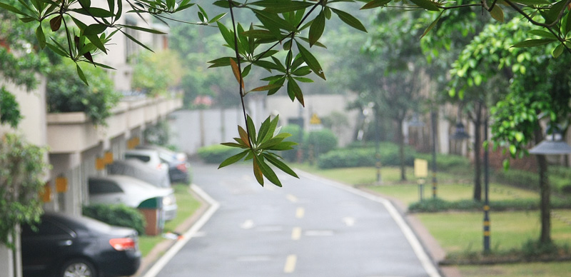

到广州当天正好是元宵，短暂的休息便迫不及待地下楼看看这个公园般的新栖息地。
这真不愧是花城，沿着郁郁葱葱的小区林荫路绕来绕去，时不时会飘来桂花香。各种花开得绚烂：紫荆花，山茶花，红色绒绒的合欢花，紫红的三角梅，紫色的大概是满天星，黄色的像迎春花，但又不是一长串的灌木丛，而是长在高高的树上，满树绿叶点缀几簇黄色繁花。想起过年时北京庙会清一色的假花，眼前的景象真是无法想象，繁茂的植物，一大片湖水，光在小区逛逛就顶上逛北方的公园了。湖边是传说中的独栋别墅，每家门口有独立的邮筒，临湖的一边还有独立台阶下到湖面，湖心有小桥连接两岸，湖边有人钓鱼。
在路口看小区地图时，一个保安看我们脸生走过来询问，我们说了住址后，保安竟然说出我们房东的名字，问我们是房东什么人，实在让人惊叹。保安跟我们说要想了解整个小区，还是走走逛逛更好，小区挺大，看地图看不出什么。 在小区早餐档买了两个叉烧包、两个马蹄糕、一杯豆浆，总共六块五，这在711估计只够买一个叉烧包。想起临行前爸妈叮嘱我们以后还是要注重早餐，看来可以不负所托了。晚上回到家觉得太累，便没有去几公里外的江边看烟花表演，但在窗边偶尔也能看到远处的烟火和孔明灯，就当是欢迎我们到来吧。